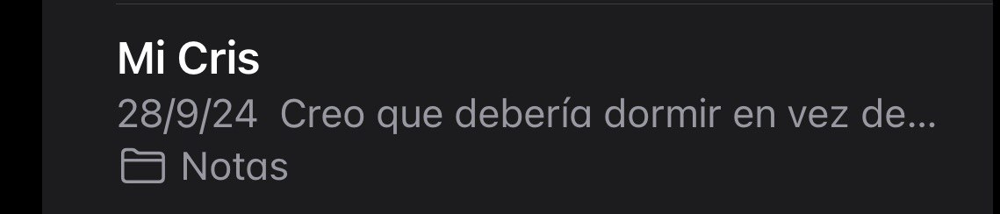
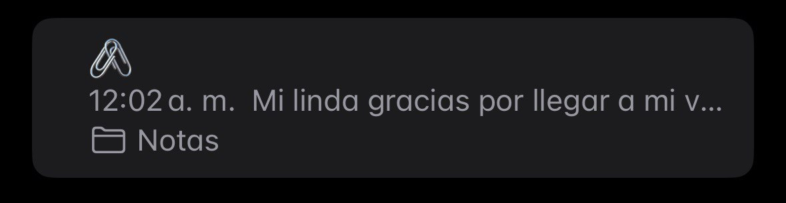
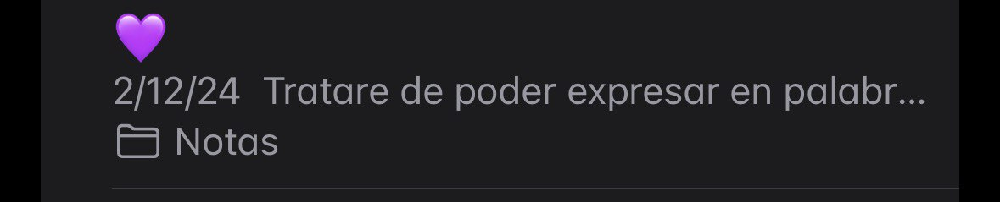
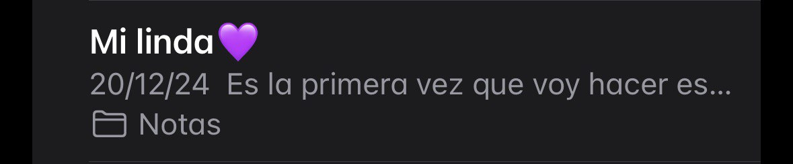

Presiona Aqui!
Feliz Cumpleaños linda💜
Feliz cumpleaños Mi Cris espero que te la pases super bien y disfrutes de tu cumpleaños te dejo con este pequeño detalle para recordarte lo importante que eres en mi vida y que a pesar de que ahora no hablemos y me haya alejado quiero que sepas que siempre puedes contar conmigo cuando lo necesites ya que tu también lo has estado para mi, solo recordarte que eres una chica increíble, inteligente y de buen corazón y me alegro de que estes cumpliendo tus metas se que tu carrera tiene su dificultad incluso es de las carreras mas complicadas por lo que es medicina pero yo se que vas a lograr ser la mejor enfermera desearte que Dios te bendiga y de que sigas adelante y siempre cumple tus sueños TQM.
Te comparto lo que mi corazón y mente llegaron a sentir por ti, Gracias por ser Mi mejor amiga y mas que una amiga alguien en quien pueda confiar como una familia.

Mi Cris Creo que debería dormir en vez de ponerme a escribir como bobo pero bueno, quiero que sepas que en verdad te quiero mucho y aprecio demasiado que siempre me escuchas y que a pesar de que estés cansada o ya tengas sueño siempre te quedes conmigo en llamada sabiendo que yo no pudo dormir, gracias por simplemente escuchar mis pensamientos y no dejarme solo, eres esa chica la cual siempre voy a querer por reírte y darme tu opinión de las ocurrencias que suelo decir Jajaja tal vez aveces me paso con lo que suelo hablar pero eso significa que eres la única chica a quien en verdad tengo confianza y por eso te amo y te amaré mucho mi rabanito.
🖇️ Mi linda gracias por llegar a mi vida no sabes lo agradecido que estoy de que estes a mi lado y lo importante que eres para mi el cariño que te tengo no sabría explicarlo(eres mi deseo hecho realidad ✨) tú me escuchas y no me juzgas tú estás a mi lado cuando me quejo de todo lo que me pasa tú estás cuando te pido salir, cuando estoy contigo me siento en casa a pesar del poco tiempo que estando juntos disfruto cada minuto y cada segundo a tu lado ya que llenas mi corazón con mucho cariño, contigo no me hace falta ya que me lo das todo eres todo lo que siempre anhelé tener en mi vida, me llenas de positivismo cuando me siento cansado de todo… te quiero muchísimo y no sabes lo mucho que te extraño de lunes a viernes quisiera robarte un ratito para pasar contigo.
💜 Tratare de poder expresar en palabras esto porque es una sensación inexplicable para mi, Cristianny te volviste la chica más especial en mi vida y créeme que no existen palabras que describan lo que siento por ti, tú llegaste a mi vida cuando yo solo vivía mi vida por vivir y ya no me importaba nada ni nadie hasta que volví hablar contigo, al inicio pensé que solo seríamos amigos pasajeros y ya pero cuando empezamos a salir más seguido y lo bien que la pasaba contigo sentí que por fin encontré un lugar seguro alguien en quien yo puedo confiar alguien que me conoce alguien que a pesar de que me haya alejado nada cambia entre nosotros y puede pasar el tiempo y logro entender como pondremos tener siempre esa linda conexión, ahora que tiene que ver todo eso con lo que ahora me esta pasando y es que quiero entender porque con todas las personas que yo quería que estén en mi vida o conozcan todo lo que tú conoces de mi nunca llegaron a permanecer… Mi mamá por primera vez acepta que alguien de verdad me importa y no le incomoda que tú estés conmigo incluso que te lleve a cualquiera lado conmigo y lo más impactante para mi que ella no le incomode y me moleste de que eres mi novia cuando con otras chicas nunca le agrado la idea de molestarme o de que yo les diera mucha importancia ya que para ella no son importantes y no solo con chicas ya que cuando salía con amigos o amigas igual no le agradaba mucho y me preguntaba a cada rato que donde estaba y que estaba haciendo pero contigo es diferente se porta amable ni me regaña y es más te trata a ti como si fueras de la familia y no solo ella si no que mis hermanos también les caes bien más mi hermana que es la mas dificil de que alguien le caiga bien y bueno dejando de lado de que me molestan de que eres mi novia yo te puedo llevar conmigo y mi familia y no se sienten incómodos con tu presencia cosa que si lo hacían cuando invitaba a alguien más. Ahora lo que siento yo ante todo eso es lo que me tiene todo pensativo y es que yo Te quiero muchísimo de verdad no sabes lo mucho que te quiero y lo importante que eres para mi y que eres la única por quien yo actualmente daría todo, ya que contigo volví a confiar contigo no me da pena mostrarme como soy y que tú me escuchas que es lo más valioso para mi.
Mi linda💜 Es la primera vez que voy hacer esto y es que ahora que estás tú, tengo la confianza de decirte que estos días no me he sentido bien esto siempre me pasa a días de mi cumpleaños no entiendo el porqué pero si me suelo poner medio estúpido y ya no quiero sentirme así y quiero pasar de lo mejor con todos mis amigos y familia pero no estoy bien del todo, sentí mucho bajones estos días y no sé como controlarlos y por eso me cierro y estoy cortante con todos y es que igual con el tema de las pasantías eh estado preocupado bastante ya que tengo que presentar full papeleo y tenía que resolver unos asuntos pero ya acabaré por fin con eso, y se que esta semana me eh portado como un tonto pero no me siento del todo bien y eres la única actualmente a quien se lo puedo decir sin ser juzgado y en quien puedo confiar, gracias por esos tiktok lindos de esta semana, gracias por ser una linda persona a un cuando respondí cortante, te quiero enormemente y se que lo digo mucho pero de verdad gracias por estar este año y compartir de tu tiempo conmigo eres una chica maravillosa y muy linda en todos los sentidos. Cada vez que estoy contigo o hablo contigo me siento bien y espero estar para ti al igual que tú lo has estado para mi, siempre me apoyas y me sigues en todo y me aconsejas de la mejor manera, necesitaba por fin decir las cosas y no solo guardármelas para mi quiero terminar muy bien este año y si es con mi mejor amiga quien hizo que esté año sea el mejor y con mi mucho cariño yo estoy encantado, esta vez si te tomo la palabra de contarnos hasta cuando nos sintiéramos mal.Con todo mi amor,
nando 💜